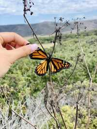
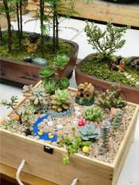

My name is Nikita. Favorite interests, among many, include watching series, listening to music, hiking, photography, and sleeping. Once I was flipping through albums on my phone, and I realized that I have the hobby of capturing beautiful flowers and plants. The reason I think it's because I live in an area that vegetation flourishes all year round.
I'll give you my experience of how to use your iPhone to take good pictures without any editing or additional Apps.
 I'd like to share Two other tips that might be helpful for you. Tip 1, if you don't want to take outdoor pictures, you can create your own photoshop studio at home by grabbing some of your favorite gadgets together. It doesn't need to be fancy, just be innovative and fits your personal aesthetic insight. Tip 2, find the room in your house that has the most light. Again, if you don't want the follow-up work, adequate lighting is essential for you to take good photos.
These Apps provide a slew of filters that you can play around and allow you to be more creative.
If you would like to further develop your skills, welcome to check out this this link and watch this video to learn more about how to take good close-up through your iPhone. Please feel free to leave any comments to me and thank you for browsing!